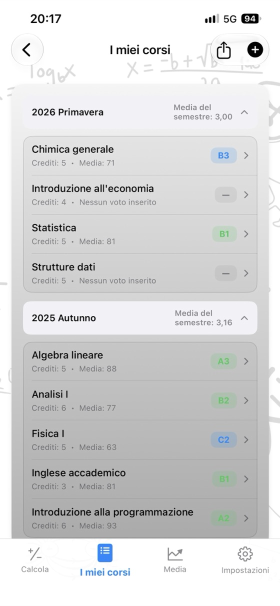
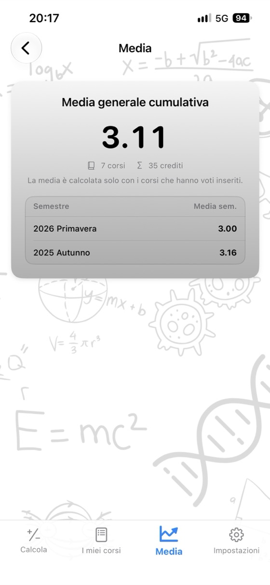
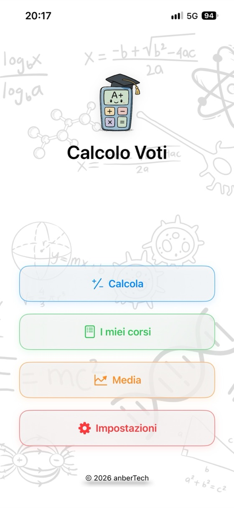
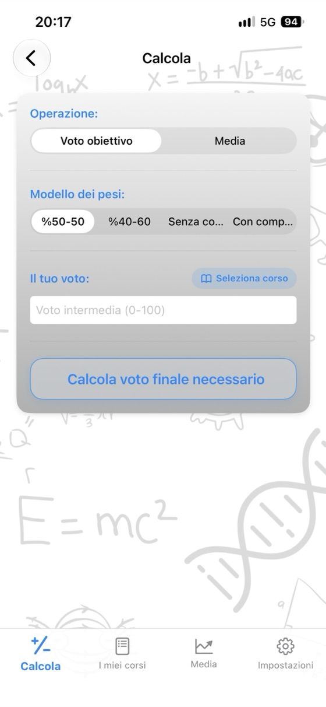
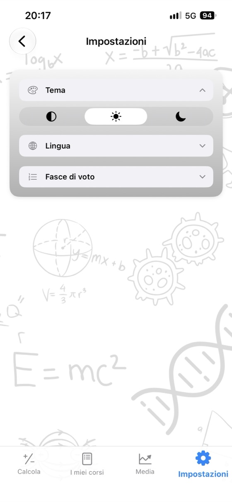

Conosci i tuoi voti,
pianifica il tuo futuro.
La media del corso, il voto necessario all'esame finale e il GPA in un'unica app. Senza pubblicità, senza account, completamente offline.
- ✓ Gratis
- ✓ Senza pubblicità
- ✓ Senza account
- ✓ Offline


Calcola subito
Provala qui prima di scaricare l'app. Modifica i valori e il risultato si aggiorna all'istante.
Finale (%): 60%
Finale (%): 60%
Calcolatori gratuiti
Usali nel browser senza scaricare nulla. Non serve registrarsi e i voti che inserisci restano sul tuo dispositivo.
Perché scegliere Calcolo Voti?
Media del corso
Inserisci i voti della prova intermedia, dell'esame finale e del compito con i rispettivi pesi: vedrai subito la media e il voto in lettere.
Finale necessario
Visualizza in un'unica schermata il voto minimo da prendere all'esame finale per ogni voto in lettere.
GPA sempre aggiornato
Salva i corsi semestre per semestre: la media del semestre e la media generale cumulativa si aggiornano automaticamente.
Scala di valutazione personalizzata
Modifica gli intervalli dei voti in lettere e i punti corrispondenti in base alle regole del tuo istituto.
Report dei voti in PDF
Condividi i tuoi corsi e la tua media in PDF con un tocco.
17 lingue
Inglese, spagnolo, tedesco, giapponese, arabo, turco e altre ancora.
La privacy prima di tutto
Nessun account, nessuna pubblicità, nessun tracciamento. I tuoi dati restano sul tuo dispositivo.
Funziona offline
Non serve internet: durante la settimana degli esami, in biblioteca, ovunque.
Uno sguardo all'app



Domande frequenti
Come calcolo la media del corso?
Moltiplica ogni voto per il suo peso e somma i risultati. Con una prova intermedia che pesa il 40% e un esame finale che pesa il 60%: media = intermedia × 0,40 + finale × 0,60. Con 62 alla prova intermedia e 75 al finale ottieni 62 × 0,40 + 75 × 0,60 = 69,8. Se è previsto anche un compito, aggiungi il suo voto ponderato; la somma dei pesi deve essere 100%.
Quanto devo prendere all'esame finale per passare?
Finale necessario = (media desiderata − intermedia × peso intermedia) ÷ peso finale. Con 55 alla prova intermedia, un peso del 40% e una media minima di 50 per passare: (50 − 22) ÷ 0,60 = 46,7, quindi devi prendere almeno 47 al finale. Calcolo Voti esegue questo calcolo per tutti i voti in lettere contemporaneamente.
Come si calcola il GPA?
Moltiplica i punti associati al voto di ogni corso (A = 4,0, B = 3,0 …) per i relativi crediti, somma i risultati e dividi per i crediti totali. Il risultato è il tuo GPA, cioè la media dei voti su scala 4,0.
Gli intervalli dei voti in lettere sono uguali ovunque?
No. Gli intervalli e i punti associati ai voti cambiano da un Paese all'altro, tra università e persino tra corsi. Nell'app puoi modificare la scala di valutazione per adattarla esattamente alla tua.
Che cos'è il voto minimo al finale?
Alcuni istituti non consentono di superare il corso se il voto dell'esame finale è inferiore a una certa soglia (per esempio 30, 45 o 50), anche quando la media è sufficiente. Inserisci la soglia minima: il calcolo del finale necessario ne terrà conto.
Calcolo Voti è gratis?
Sì. L'app è gratuita su App Store, senza pubblicità, abbonamenti o acquisti in-app. Anche i calcolatori su questo sito sono gratuiti.
Dove vengono salvati i miei voti?
Solo sul tuo dispositivo. Non serve un account e non viene inviato nulla a un server. I voti che inserisci nei calcolatori online restano nel tuo browser.
Esiste una versione per Android?
La versione Android arriverà presto su Google Play. Al momento l'app è disponibile su App Store per iPhone e iPad con iOS 17.6 o versioni successive.
Tutti i tuoi corsi in un unico posto
Gratis. Senza pubblicità. Senza account.